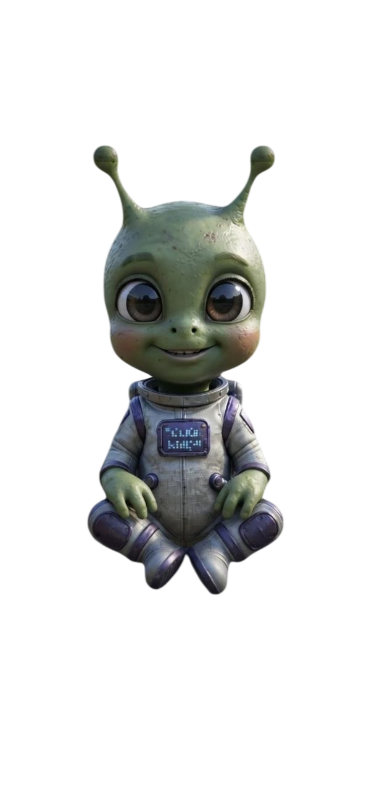
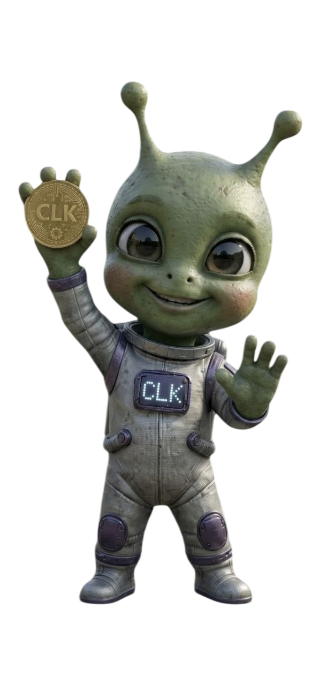
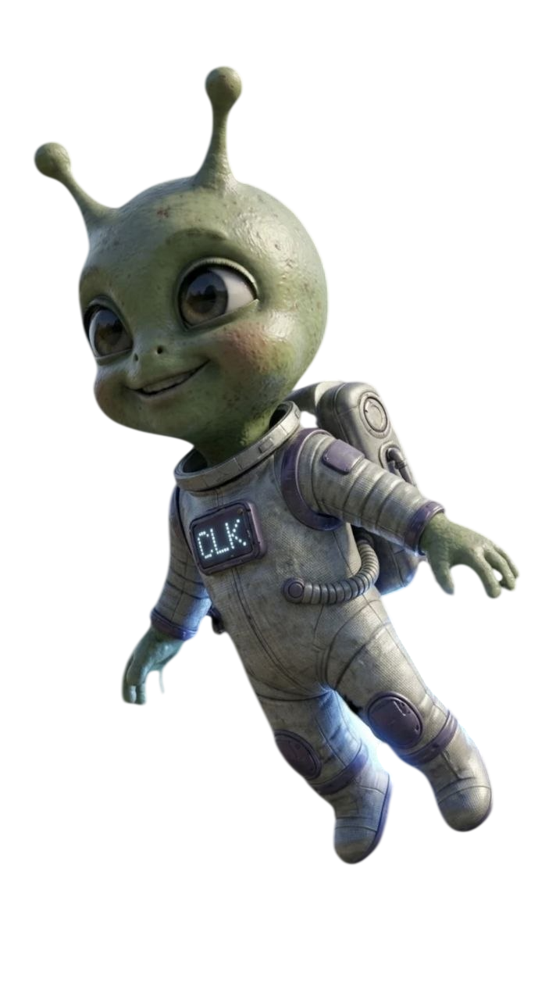
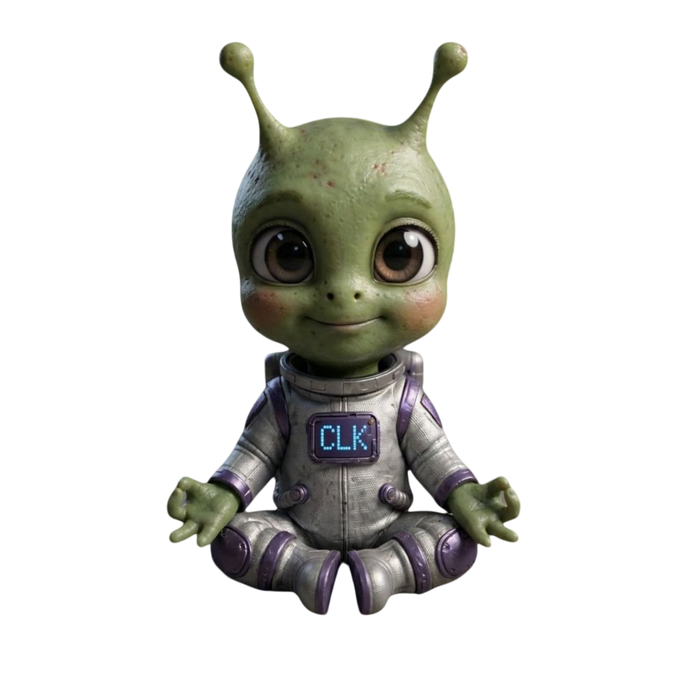

TAP
Tap instantáneo
Cada toque genera CLK en el momento, sin esperas.





MISIONES
Misiones y mejoras
Subís de nivel y tu potencia de minado crece con vos.
OFFLINE
Minado en segundo plano
Tu alien sigue minando aunque cierres el juego.
INVASIÓN
Nadie está a salvo
PvP offline: robá CLK ya minado de otros jugadores.
> Transmisión entrante // Desktop + Móvil
MINÁ MIENTRAS NO MIRÁS.
Un juego tap-to-earn donde tu alien sigue minando CLK incluso con la app cerrada.
> Señal decodificada
ASÍ MINA UN ALIEN.
Tap, misiones, minado offline, arcade e invasión — todo en un solo juego.
SEÑAL: 00% DECODIFICADA
SCROLLEÁ PARA EXPLORAR